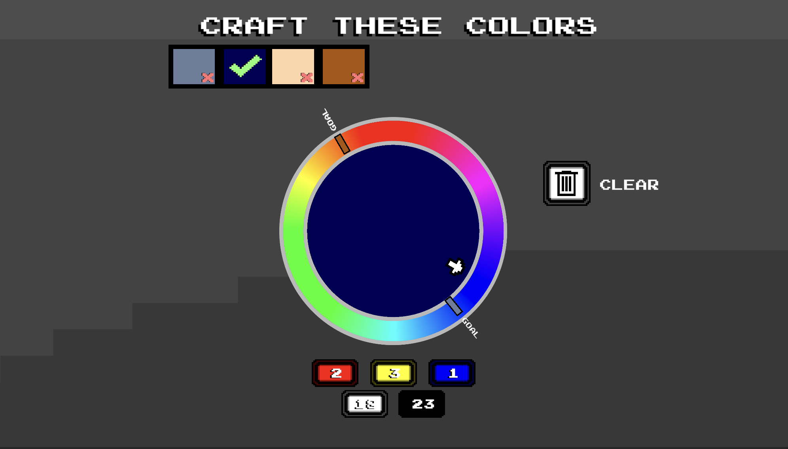

Background
Pixel Palette puts a twist on typical zen paint-by-numbers games by making the player collect and mix the colors themselves.
Our theory was that a juicy painting mechanic would be even more fun for players if they were able to mix their own paints, and we tested several early prototypes with players that all confirmed this idea.
Challenges
By far the hardest part of the game to get right was the crafting system, and it took us almost until the very end of development to settle on something that people understood intuitively.
The part of Pixel Palette that I'm most proud of is this wheel-shaped color mixer with an arrow that slides around based on the hues the player adds.
This made it much easier for people to make decisions about color mixing, and encouraged them to experiment with what they added.
We had to read a lot research papers about color mixing algorithms to get our colors to mix like real paints, since it was hard for people to think in terms of RGB colors the way computers do.